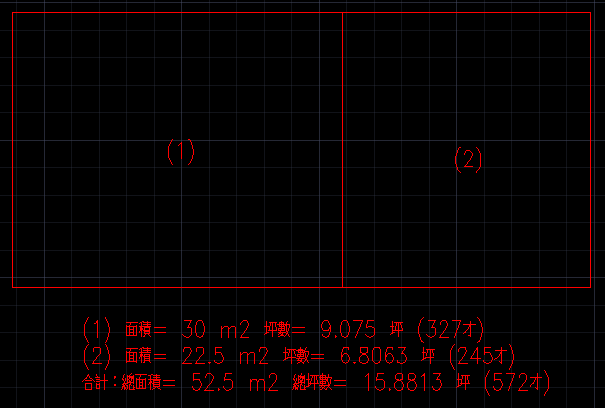

※這是僅提供給有安裝論壇外掛程式贊助會員使用。
※用戶若是有轉換為才數需求，請按照以下方式下載及更新。
[列示面積]QArea指令：計算圖面中封閉區域，列示加總面積及轉換為坪數(才數)。
更新說明：面積均以m2(平方公尺)顯示，文字加入自動轉換為才數。

https://www.box.com/s/auprx8fias72bo7p1uwu
步驟一：使用【滑鼠左鍵】→ 選取「QArea-Update.exe」→【滑鼠右鍵】→「以系統管理員身分執行」。
步驟二：「安裝」→「全部皆是」→「完成」